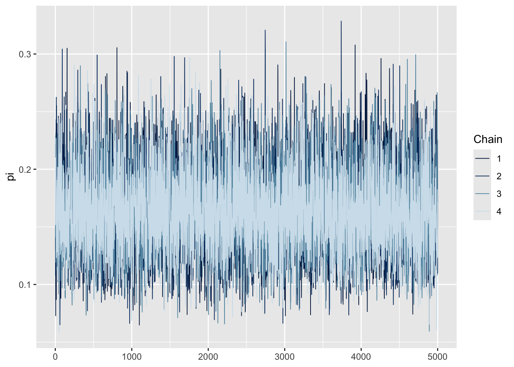
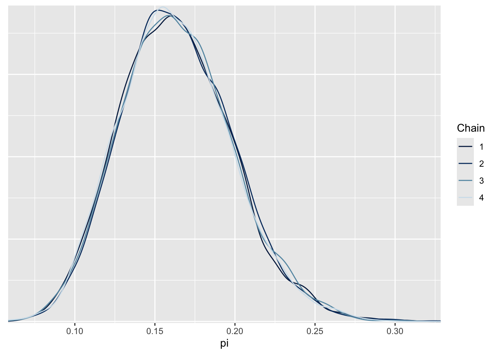
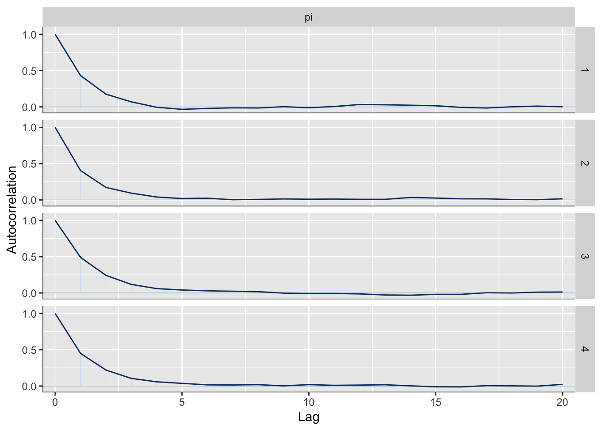
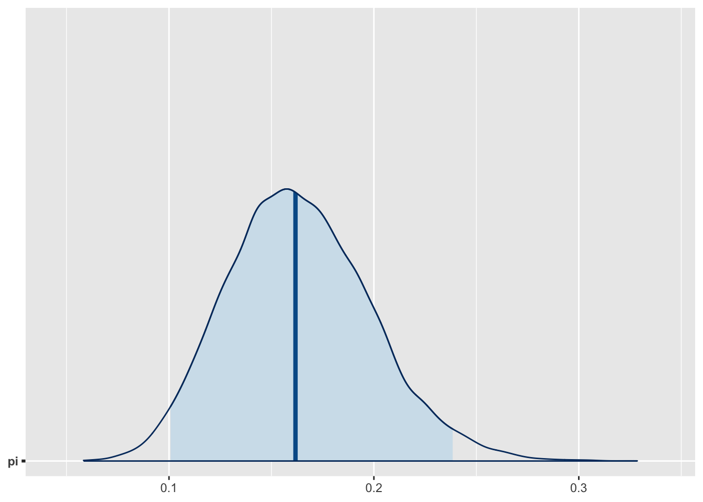
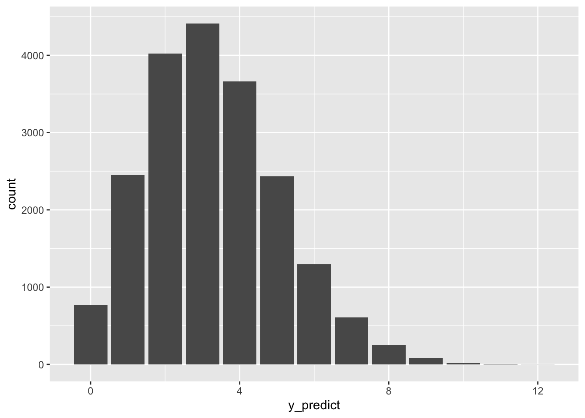

# Load packages
library(bayesrules)
library(tidyverse)
library(rstan)
library(bayesplot)
library(broom.mixed)
library(janitor)
# Load data
data("moma_sample")3 Posterior Inference & Prediction
What are the chances that the modern artist is Gen X or even younger, i.e., born in 1965 or later? let \(\pi\) denote the proportion of artists represented in major U.S. modern art museums that are Gen X or younger.
moma_sample %>%
count(genx) genx n
1 FALSE 86
2 TRUE 14So, by theory, the posterior pdf,
\[ \begin{split} Y | \pi & \sim \text{Bin}(100, \pi) \\ \pi & \sim \text{Beta}(4, 6) \\ \end{split} \;\;\;\; \Rightarrow \;\;\;\; \pi | (Y = 14) \sim \text{Beta}(18, 92) \] There are three common tasks in posterior analysis:
- Estimation,
- Hypothesis testing, and
- Prediction
3.1 Posterior analysis with MCMC
3.1.1 Posterior simulation
# STEP 1: DEFINE the model
art_model <- "
data {
int<lower = 0, upper = 100> Y;
}
parameters {
real<lower = 0, upper = 1> pi;
}
model {
Y ~ binomial(100, pi);
pi ~ beta(4, 6);
}
"
# STEP 2: SIMULATE the posterior
art_sim <- stan(model_code = art_model, data = list(Y = 14),
chains = 4, iter = 5000*2, seed = 84735)# Parallel trace plots
mcmc_trace(art_sim, pars = "pi")
# Parallel density plots
mcmc_dens_overlay(art_sim, pars = "pi")
# Autocorrelation plot
mcmc_acf(art_sim, pars = "pi")

neff_ratio(art_sim, pars = "pi")[1] 0.3688749rhat(art_sim, pars = "pi")[1] 1.000638Our simulation is extremely stable.
3.1.2 Posterior estimation & hypothesis testing
broom.mixed::tidy(art_sim, conf.int = TRUE, conf.level = 0.95)# A tibble: 1 × 5
term estimate std.error conf.low conf.high
<chr> <dbl> <dbl> <dbl> <dbl>
1 pi 0.164 0.0350 0.101 0.238The estimate reports that the median of our 20,000 Markov chain value.
# Shade in the middle 95% interval
mcmc_areas(art_sim, pars = "pi", prob = 0.95)
# Store the 4 chains in 1 data frame
art_chains_df <- as.data.frame(art_sim, pars = "pi")
dim(art_chains_df)[1] 20000 1# Calculate posterior summaries of pi
art_chains_df %>%
summarise(
post_mean = mean(pi),
post_median = median(pi),
post_mode = bayesrules::sample_mode(pi),
lower_95 = quantile(pi, 0.025),
upper_95 = quantile(pi, 0.975)
) post_mean post_median post_mode lower_95 upper_95
1 0.1636757 0.1617981 0.1577523 0.1007598 0.2384584Testing the claim that fewer than 20% of major museum artists are Gen X,
art_chains_df %>%
mutate(test = pi < 0.20) %>%
tabyl(test) test n percent
FALSE 2987 0.14935
TRUE 17013 0.85065By this approximation, there’s an 85% chance that Gen X artist representation is under 0.20.
3.1.3 Posterior prediction
set.seed(1)
art_chains_df %>%
mutate(y_predict = rbinom(length(pi), size = 20, prob = pi)) -> art_chains_df
art_chains_df %>%
head() pi y_predict
1 0.13007016 2
2 0.17552692 3
3 0.22141712 5
4 0.11582998 4
5 0.07283286 0
6 0.12821621 5# Plot the 20,000 predictions
art_chains_df %>%
ggplot(aes(x = y_predict)) +
stat_count()
# Posterior mean predicton and posterior prediction interval
art_chains_df %>%
summarise(
mean = mean(y_predict),
lower_80 = quantile(y_predict, 0.1),
upper_80 = quantile(y_predict, 0.9)
) mean lower_80 upper_80
1 3.27505 1 6